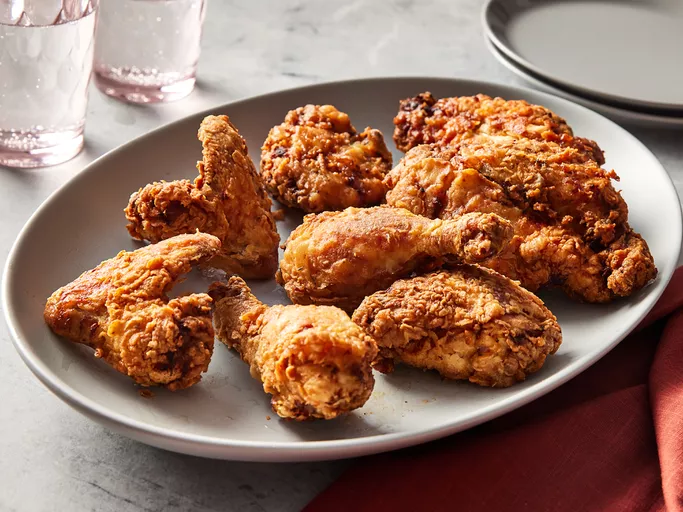

Buttermilk Fried Chicken

Description
Buttermilk fried chicken that's incredibly tender, thanks to tangy buttermilk. After the buttermilk soak, dredge the chicken pieces in seasoned flour and fry them in hot oil until crisp and golden.
Ingredients
- Whole chicken(cut into eight pieces)
- Seasonings
- Buttermilk
- All-purpose flour
- Peanut Oil
Steps:
- Toss the chicken pieces in seasonings, then marinate in buttermilk overnight.
- Make the seasoned flour.
- Dredge each buttermilk-soaked chicken piece in flour and transfer to a plate.
- Fry the chicken until an instant read thermometer reads 165 degrees F.
- Drain on a cooling rack over a paper towel-lined baking sheet.